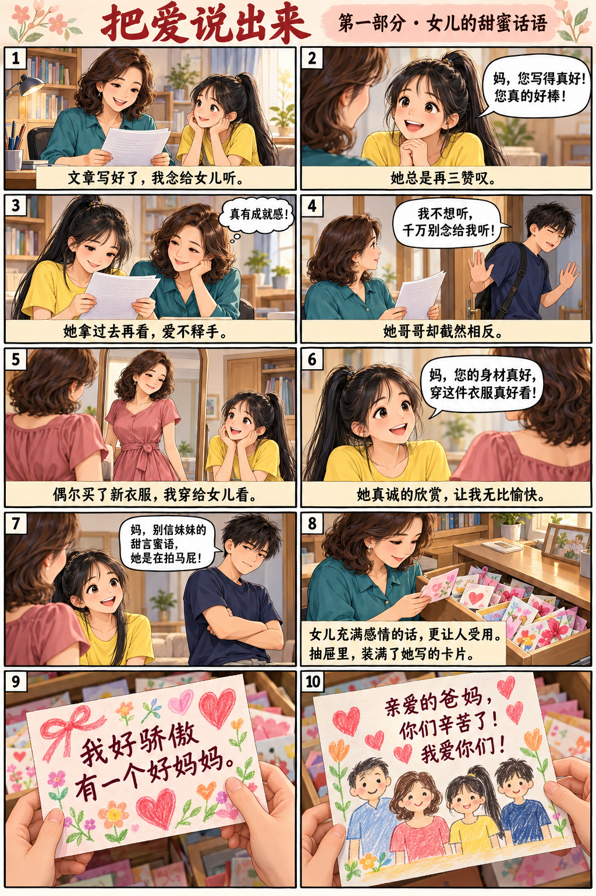
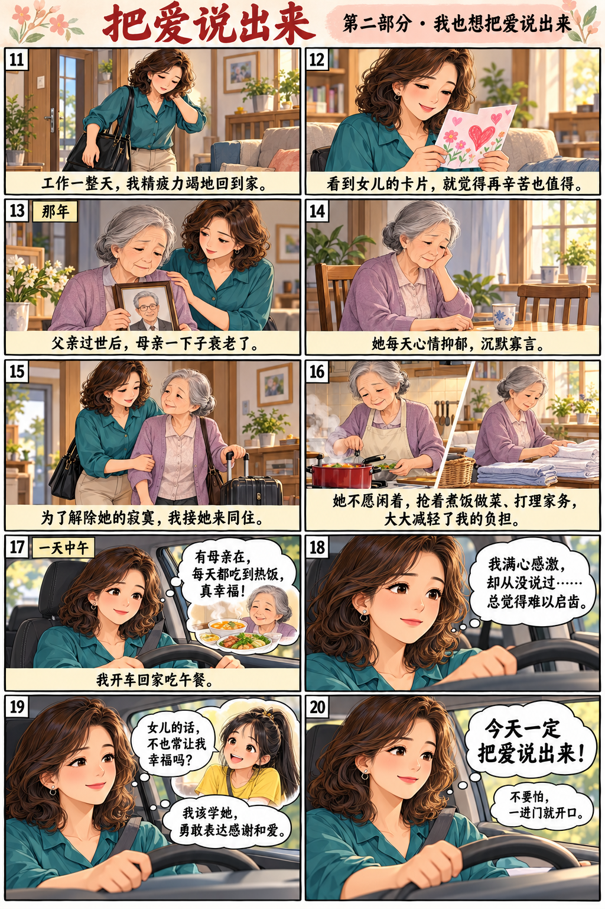
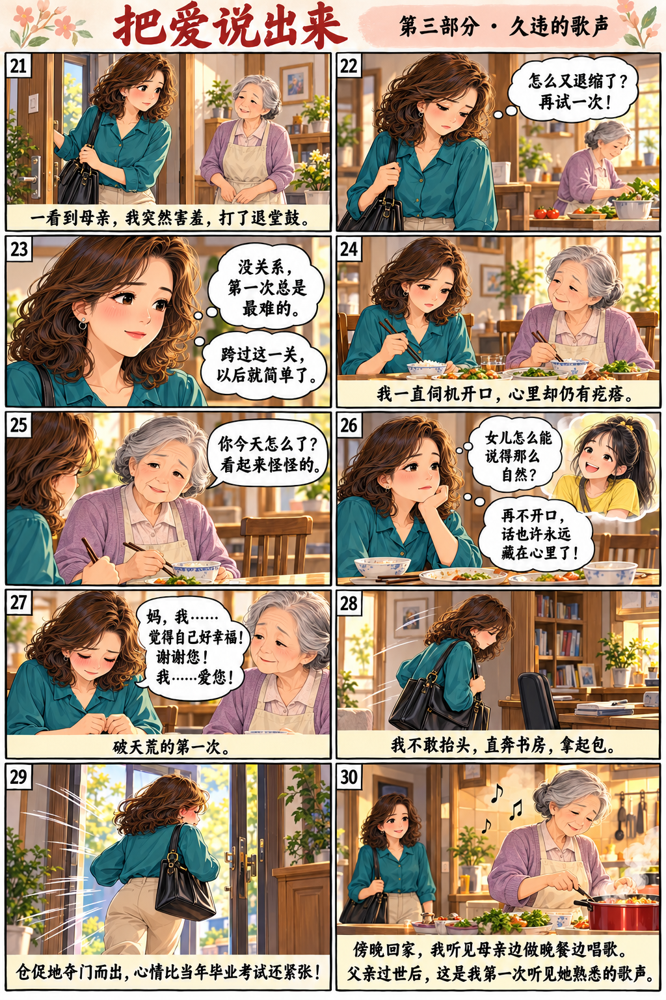

课文主页 / 回读
把爱说出来
逐段读: 开始






第1段
女儿常常称赞我。我文章写好了，念给她听，她总是带着崇拜的眼神，再三赞叹：“妈，您写得真好！您真的好棒！”之后她还会把文章拿过去再看一遍，一副爱不释手的模样，让我很有成就感。
第2段
她哥哥与她截然相反。要是把文章念给他听，一定会碰钉子。他不仅会马上逃走，还会边逃边说：“我不想听，千万别念给我听。”
第3段
偶尔买了新衣服，我穿上后，女儿总会张大眼睛，真诚地看着我说：“妈，您的身材真好，穿上这件衣服真好看！”看到女儿双眼含笑，一脸欣赏的样子，我的心情也变得无比愉快。
第4段
反观她的哥哥，非但没有赞美的话，还经常泼冷水：“妈，您别相信妹妹的甜言蜜语，她是在拍马屁！”
第5段
不管怎么说，相比之下，女儿充满感情的话语肯定更让人受用。我的抽屉里装满了女儿写给我的各式各样的卡片。
第6段
“我好骄傲有一个好妈妈。”
第7段
“亲爱的爸妈，你们辛苦了！我爱你们！”
第8段
有时我工作了一整天，精疲力竭地回到家，看到女儿的卡片，就觉得再辛苦也是值得的。
第9段
那年，父亲过世，母亲一下子衰老了。她每天心情抑郁，沉默寡言。为了解除她的寂寞，我接她来和我们同住。母亲来了后，不愿闲着，每天抢着帮我煮饭做菜，打理家务，大大减轻了我的负担。
第10段
一天中午，我开车回家吃午餐。我一边开车，一边想：有母亲在的日子，每天都能吃到热腾腾的饭菜，实在是太幸福了。尽管对母亲充满了感激之情，但我从未向她表达过，总觉得难以启齿。我不禁扪心自问：我不是常常因为女儿的甜言蜜语而感到幸福吗？我是不是应该学学女儿，勇敢地向母亲表达感谢，表达爱呢？
第11段
我下定决心，今天一定要把爱说出来。一路上，我不断给自己打气：不要怕，一进门就开口。
第12段
没想到，推开家门，一看到母亲，我突然一阵害羞，打了退堂鼓。我有些懊恼，决定再接再厉。我安慰自己：没关系，第一次总是最难的。跨过这一关，以后就简单了。
第13段
吃饭时，我一直在伺机行动，但心里还是有些疙瘩。母亲看出我心不在焉，问道：“你今天怎么了？看起来怪怪的。”
第14段
我开始佩服女儿，她怎么能那么自然地把爱说出口！饭快吃完了，我心想：再不把握机会，想说的话恐怕要永远藏在心里了。我低着头，破天荒第一次说道：“妈，我……我觉得自己好幸福！谢谢您！我……爱您！”
第15段
我不敢抬头，不敢看母亲的表情，说完就直奔书房，拿起包，仓促地夺门而出，心情比当年参加毕业考试还紧张。
第16段
那天傍晚下班回家，我一进门就听见母亲的歌声。她一边在厨房忙着准备晚餐，一边唱着歌。自从父亲过世后，我还是第一次听到这熟悉的歌声。
本文改编自廖玉蕙的《示爱》。